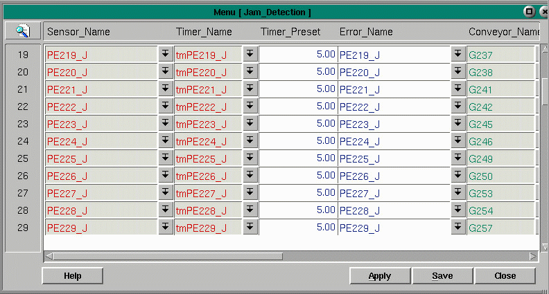

Jam Detection
The Jam Detection menu uses the Jamcheck table to control detection of conveyor
jams, to draw the jammed conveyor, and to display the error messages on the
conveyor status screen.
The Jamcheck menu is used to configure jam detection for the purpose of shutting down sections of conveyor if there is a jammed condition. A photoeye is the device normally displayed in the field Sensor_Name from the Parts database. When the photoeye becomes blocked, the timer in the field -- Timer_Name -- begins timing for the preset number of seconds. The field Timer_Length, fills in automatically, based on the information in the timer record. If the timer times out, an error message is generated and a response is executed. Timers used for jam detection will have a prefix of tm and include the name of the photoeye, usually ending with a 'J' for jam.
Many of these fields are pull-downs, indicated by a pull-down menu symbol, meaning that they bring up another menu from which to make a selection. You can press enter on the empty field and move the cursor to the correct record. Press enter to cause your selection to appear in the desired field. Several of the fields pull down into the Parts database. They are Sensor Name, Conveyor Name, and Motor Under Jam.

Control devices, conveyor parts, and timers are shown in green when in the 'high' or 'on' state. When displayed in red, the part or device is in the 'off' or 'low' state. From the machine controlling the jam, using the insert key will force the part or device on. When forced on, the part will appear highlighted in yellow with green letters. The delete key forces a part or device off, showing in a yellow box with red letters. Press the same key again to remove the force, allowing the part or device to operate normally.
The following fields make up the Jamcheck menu.
Fields:
Sensor Name - the part name of the jam sensor. The sensor may be a photoeye, contact from a piece of equipment, or other device.Timer Name - the name of the jam detection timer located in the timer menu
Timer Preset - the length of time for the timer to run before the motor stops
Error Name - the name of the Error in the System Errors table
Conveyor Name - the name of the part to draw in a jammed state
Zone - the jam zone within which the conveyor will shut down
Jam Owner - the machine controlling the jam zone
Jam State - a number indicating the conveyor state
Motor Under Jam Eye - the motor to stop
Copyright © 2001 Fortna Inc. All rights reserved.